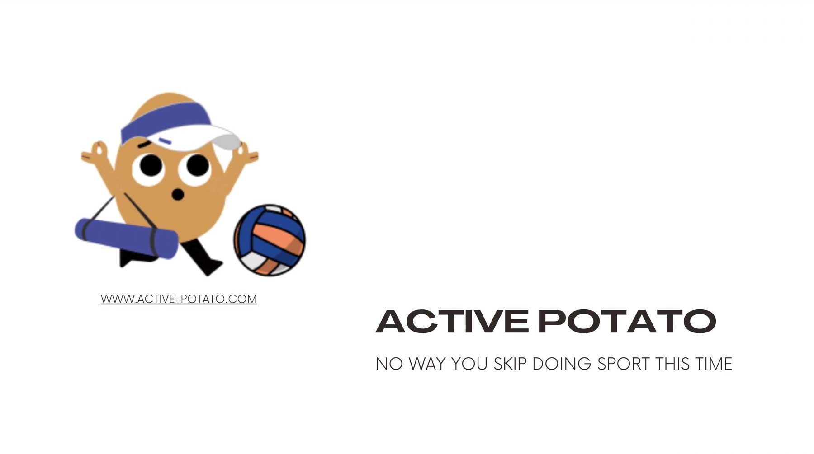

Safeblok
A web app for foreigners living in Bali to report harmful incidents by pinning them on a map.
See the screens →Software developer · Antalya
I build software for a living. Before that I spent six years as an accountant, and I still count things for fun.
Developer at Teamtailor, a recruitment platform used by companies around the world. I work across the stack in Ruby on Rails and Ember.
Six years of spreadsheets, reconciliations and month-end closes. Then I quit to join a nine-week web development bootcamp at Le Wagon in Bali.
Accounting is boring.
After the bootcamp I joined Paraşüt as a developer. They make accounting software, so the spreadsheets followed me. This time I was building them.
From my first months as a developer, built in small teams at Le Wagon.
A web app for foreigners living in Bali to report harmful incidents by pinning them on a map.
See the screens →
A mobile-first web app for finding the nearest group sports activity in seconds, with live chat.
See the screens →